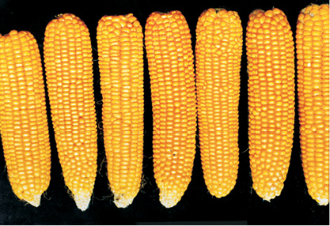
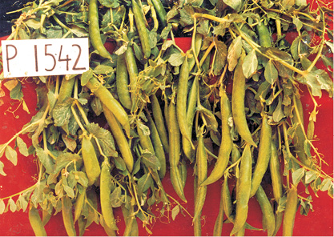
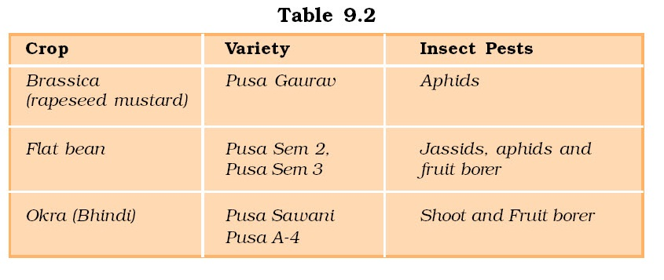

Chapter 9
Strategies for Enhancement in Food Production
Strategies for Enhancement in Food Production

9.1 Animal Husbandry
9.2 Plant Breeding
9.3 Single Cell Proteins
9.4 Tissue Culture
With ever-increasing population of the world, enhancement of food production is a major necessity. Biological principles as applied to animal husbandry and plant breeding have a major role in our efforts to increase food production. Several new techniques like embryo transfer technology and tissue culture techniques are going to play a pivotal role in further enhancing food production.
9.1 Animal Husbandry
Animal husbandry is the agricultural practice of breeding and raising livestock. As such it is a vital skill for farmers and is as much science as it is art. Animal husbandry deals with the care and breeding of livestock like buffaloes, cows, pigs, horses, cattle, sheep, camels, goats, etc., that are useful to humans. Extended, it includes poultry farming and fisheries. Fisheries include rearing, catching, selling, etc., of fish, molluscs (shell-fish) and crustaceans (prawns, crabs, etc.). Since time immemorial, animals like bees, silk-worm, prawns, crabs, fishes, birds, pigs, cattle, sheep and camels have been used by humans for products like milk, eggs, meat, wool, silk, honey, etc.
It is estimated that more then 70 per cent of the world livestock population is in India and China. However, it is surprising to note that the contribution to the world farm produce is only 25 per cent, i.e., the productivity per unit is very low. Hence, in addition to conventional practices of animal breeding and care, newer technologies also have to be applied to achieve improvement in quality and productivity.
9.1.1 Management of Farms and Farm Animals
A professional approach to what have been traditional practices of farm management gives the much needed boost to our food production. Let us discuss some of the management procedures, employed in various animal farm systems.
9.1.1.1 Dairy Farm Management
Dairying is the management of animals for milk and its products for human consumption. Can you list the animals that you would expect to find in a dairy? What are different kinds of products that can be made with milk from a dairy farm? In dairy farm management, we deal with processes and systems that increase yield and improve quality of milk. Milk yield is primarily dependent on the quality of breeds in the farm. Selection of good breeds having high yielding potential (under the climatic conditions of the area), combined with resistance to diseases is very important. For the yield potential to be realised the cattle have to be well looked after – they have to be housed well, should have adequate water and be maintained disease free. The feeding of cattle should be carried out in a scientific manner – with special emphasis on the quality and quantity of fodder. Besides, stringent cleanliness and hygiene (both of the cattle and the handlers) are of paramount importance while milking, storage and transport of the milk and its products. Nowadays, of course, much of these processes have become mechanised, which reduces chance of direct contact of the produce with the handler. Ensuring these stringent measures would of course, require regular inspections, with proper record keeping. It would also help to identify and rectify the problems as early as possible. Regular visits by a veterinary doctor would be mandatory.
You would probably find it interesting if you were to prepare a questionnaire on diverse aspects of dairy keeping and then follow it up with a visit to a dairy farm in your locality and seek answers to the questions.
9.1.1.2 Poultry Farm Management
Poultry is the class of domesticated fowl (birds) used for food or for their eggs. They typically include chicken and ducks, and sometimes turkey and geese. The word poultry is often used to refer to the meat of only these birds, but in a more general sense it may refer to the meat of other birds too.
As in dairy farming, selection of disease free and suitable breeds, proper and safe farm conditions, proper feed and water, and hygiene and health care are important components of poultry farm management.

(a)

(b)
Figure 9.1 Improved breed of cattle and chickens
(a) Jersey (b) Leghorn
You may have seen TV news or read newspaper – reports about the ‘bird flu virus’ which created a scare in the country and drastically affected egg and chicken consumption. Find out more about it and discuss whether the panic reaction was justified. How can we prevent the spread of the flu in case some chicken are infected?
9.1.2 Animal Breeding
Breeding of animals is an important aspect of animal husbandry. Animal breeding aims at increasing the yield of animals and improving the desirable qualities of the produce. For what kind of characters would we breed animals? Would the selection of characters differ with the choice of animals?
What do we understand by the term ‘breed’? A group of animals related by descent and similar in most characters like general appearance, features, size, configuration, etc., are said to belong to a breed. Find out the names of some common breeds of cattle and poultry in the farms of your area.
When breeding is between animals of the same breed it is called inbreeding, while crosses between different breeds are called outbreeding.
Inbreeding : Inbreeding refers to the mating of more closely related individuals within the same breed for 4-6 generations. The breeding strategy is as follows – superior males and superior females of the same breed are identified and mated in pairs. The progeny obtained from such matings are evaluated and superior males and females among them are identified for further mating. A superior female, in the case of cattle, is the cow or buffalo that produces more milk per lactation. On the other hand, a superior male is the bull, which gives rise to superior progeny as compared to those of other males.
Try to recollect the homozygous purelines developed by Mendel as discussed in Chapter 5. A similar strategy is used for developing purelines in cattle as was used in case of peas. Inbreeding increases homozygosity. Thus inbreeding is necessary if we want to evolve a pureline in any animal. Inbreeding exposes harmful recessive genes that are eliminated by selection. It also helps in accumulation of superior genes and elimination of less desirable genes. Therefore, this approach, where there is selection at each step, increases the productivity of inbred population. However, continued inbreeding, especially close inbreeding, usually reduces fertility and even productivity. This is called inbreeding depression. Whenever this becomes a problem, selected animals of the breeding population should be mated with unrelated superior animals of the same breed. This usually helps restore fertility and yield.
Out-breeding : Out-breeding is the breeding of the unrelated animals, which may be between individuals of the same breed but having no common ancestors for 4-6 generations (out-crossing) or between different breeds (cross-breeding) or different species (inter-specific hybridisation).
Out-crossing: This is the practice of mating of animals within the same breed, but having no common ancestors on either side of their pedigree up to 4-6 generations. The offspring of such a mating is known as an out-cross. It is the best breeding method for animals that are below average in productivity in milk production, growth rate in beef cattle, etc. A single outcross often helps to overcome inbreeding depression.
Cross-breeding: In this method, superior males of one breed are mated with superior females of another breed. Cross-breeding allows the desirable qualities of two different breeds to be combined. The progeny hybrid animals may themselves be used for commercial production. Alternatively, they may be subjected to some form of inbreeding and selection to develop new stable breeds that may be superior to the existing breeds. Many new animal breeds have been developed by this approach. Hisardale is a new breed of sheep developed in Punjab by crossing Bikaneri ewes and Marino rams.
Interspecific hybridisation: In this method, male and female animals of two different related species are mated. In some cases, the progeny may combine desirable features of both the parents, and may be of considerable economic value, e.g., the mule (Figure 9.2). Do you know what cross leads to the production of the mule?
Figure 9.2 Mule
Controlled breeding experiments are carried out using artificial insemination. The semen is collected from the male that is chosen as a parent and injected into the reproductive tract of the selected female by the breeder. The semen may be used immediately or can be frozen and used at a later date. It can also be transported in a frozen form to where the female is housed. In this way desirable matings are carried. Artificial insemination helps us overcome several problems of normal matings. Can you discuss and list some of them?
Often, the success rate of crossing mature male and female animals is fairly low even though artificial insemination is carried out. To improve chances of successful production of hybrids, other means are also used. Multiple Ovulation Embryo Transfer Technology (MOET) is one such programme for herd improvement. In this method, a cow is administered hormones, with FSH-like activity, to induce follicular maturation and super ovulation – instead of one egg, which they normally yield per cycle, they produce 6-8 eggs. The animal is either mated with an elite bull or artificially inseminated. The fertilised eggs at 8–32 cells stages, are recovered non-surgically and transferred to surrogate mothers. The genetic mother is available for another round of super ovulation. This technology has been demonstrated for cattle, sheep, rabbits, buffaloes, mares, etc. High milk-yielding breeds of females and high quality (lean meat with less lipid) meat-yielding bulls have been bred successfully to increase herd size in a short time.
9.1.3 Bee-keeping
Bee-keeping or apiculture is the maintenance of hives of honeybees for the production of honey. It has been an age-old cottage industry. Honey is a food of high nutritive value and also finds use in the indigenous systems of medicine. Honeybee also produces beeswax, which finds many uses in industry, such as in the preparation of cosmetics and polishes of various kinds. The increased demand of honey has led to large-scale bee-keeping practices; it has become an established income generating industry, whether practiced on a small or on a large scale.
Bee-keeping can be practiced in any area where there are sufficient bee pastures of some wild shrubs, fruit orchards and cultivated crops. There are several species of honeybees which can be reared. Of these, the most common species is Apis indica. Beehives can be kept in one’s courtyard, on the verandah of the house or even on the roof. Bee-keeping is not labour-intensive.
Bee-keeping though relatively easy does require some specialised knowledge and there are several organisations that teach bee-keeping. The following points are important for successful bee-keeping:
(i) Knowledge of the nature and habits of bees,
(ii) Selection of suitable location for keeping the beehives,
(iii) Catching and hiving of swarms (group of bees),
(iv) Management of beehives during different seasons, and
(v) Handling and collection of honey and of beeswax. Bees are the pollinators of many of our crop species (see chapter 2) such as sunflower, Brassica, apple and pear. Keeping beehives in crop fields during flowering period increases pollination efficiency and improves the yield–beneficial both from the point of view of crop yield and honey yield.
9.1.4 Fisheries
Fishery is an industry devoted to the catching, processing or selling of fish, shellfish or other aquatic animals. A large number of our population is dependent on fish, fish products and other aquatic animals such as prawn, crab, lobster, edible oyster, etc., for food. Some of the freshwater fishes which are very common include Catla, Rohu and common carp. Some of the marine fishes that are eaten include – Hilsa, Sardines, Mackerel and Pomfrets. Find out what fishes are commonly eaten in your area.
Fisheries has an important place in Indian economy. It provides income and employment to millions of fishermen and farmers, particularly in the coastal states. For many, it is the only source of their livelihood. In order to meet the increasing demands on fisheries, different techniques have been employed to increase production. For example, through aquaculture and pisciculture we have been able to increase the production of aquatic plants and animals, both fresh-water and marine. Find out the difference between pisciculture and aquaculture. This has led to the development and flourishing of the fishery industry, and it has brought a lot of income to the farmers in particular and the country in general. We now talk about ‘Blue Revolution’ as being implemented along the same lines as ‘Green Revolution’.
9.2 Plant Breeding
Traditional farming can only yield a limited biomass, as food for humans and animals. Better management practices and increase in acreage can increase yield, but only to a limited extent. Plant breeding as a technology has helped increase yields to a very large extent. Who in India has not heard of Green Revolution which was responsible for our country to not merely meet the national requirements in food production but also helped us even to export it? Green revolution was dependent to a large extent on plant breeding techniques for development of high-yielding and disease resistant varieties in wheat, rice, maize, etc.
9.2.1 What is Plant Breeding?
Plant breeding is the purposeful manipulation of plant species in order to create desired plant types that are better suited for cultivation, give better yields and are disease resistant. Conventional plant breeding has been practiced for thousands of years, since the beginning of human civilisation; recorded evidence of plant breeding dates back to 9,000-11,000 years ago. Many present-day crops are the result of domestication in ancient times. Today, all our major food crops are derived from domesticated varieties. Classical plant breeding involves crossing or hybridisation of pure lines, followed by artificial selection to produce plants with desirable traits of higher yield, nutrition and resistance to diseases. With advancements in genetics, molecular biology and tissue culture, plant breeding is now increasingly being carried out by using molecular genetic tools.
If we were to list the traits or characters that the breeders have tried to incorporate into crop plants, the first we would list would be increased crop yield and improved quality. Increased tolerance to environmental stresses (salinity, extreme temperatures, drought), resistance to pathogens (viruses, fungi and bacteria) and increased tolerance to insect pests would be on our list too.
Plant breeding programmes are carried out in a systematic way worldwide–in government institutions and commercial companies. The main steps in breeding a new genetic variety of a crop are –
(i) Collection of variability: Genetic variability is the root of any breeding programme. In many crops pre-existing genetic variability is available from wild relatives of the crop. Collection and preservation of all the different wild varieties, species and relatives of the cultivated species (followed by their evaluation for their characteristics) is a pre-requisite for effective exploitation of natural genes available in the populations. The entire collection (of plants/seeds) having all the diverse alleles for all genes in a given crop is called germplasm collection.
(ii) Evaluation and selection of parents: The germplasm is evaluated so as to identify plants with desirable combination of characters. The selected plants are multiplied and used in the process of hybridisation. Purelines are created wherever desirable and possible.
(iii) Cross hybridisation among the selected parents: The desired characters have very often to be combined from two different plants (parents), for example high protein quality of one parent may need to be combined with disease resistance from another parent. This is possible by cross hybridising the two parents to produce hybrids that genetically combine the desired characters in one plant. This is a very time-consuming and tedious process since the pollen
grains from the desirable plant chosen as male parent have to be collected and placed on the stigma of the flowers selected as female parent (In chapter 2 details on how to make crosses have been described). Also, it is not necessary that the hybrids do combine the desirable characters; usually only one in few hundred to a thousand crosses shows the desirable combination.
(iv) Selection and testing of superior recombinants: This step consists of selecting, among the progeny of the hybrids, those plants that have the desired character combination. The selection process is crucial to the success of the breeding objective and requires careful scientific evaluation of the progeny. This step yields plants that are superior to both of the parents (very often more than one superior progeny plant may become available). These are self-pollinated for several generations till they reach a state of uniformity (homozygosity), so that the characters will not segregate in the progeny.
(v) Testing, release and commercialisation of new cultivars: The newly selected lines are evaluated for their yield and other agronomic traits of quality, disease resistance, etc. This evaluation is done by growing these in the research fields and recording their performance under ideal fertiliser application, irrigation, and other crop management practices. The evaluation in research fields is followed by testing the materials in farmers’ fields, for at least three growing seasons at several locations in the country, representing all the agroclimatic zones where the crop is usually grown. The material is evaluated in comparison to the best available local crop cultivar – a check or reference cultivar. India is mainly an agricultural country. Agriculture accountsfor approximately 33 per cent of India’s GDP and employs nearly 62 per cent of the population. After India’s independence, one of the main challenges facing the country was that of producing enough food for the increasing population. As only limited land is fit for cultivation, India has to strive to increase yields per unit area from existing farm land. The development of several high yielding varieties of wheat and rice in the mid-1960s, as a result of various plant breeding techniques led to dramatic increase in food production in our country. This phase is often referred to as the Green Revolution. Figure 9.3 represents some Indian hybrid crops of high yeilding varieties.

(a)
(b)

(c)
Figure 9.3 Some Indian hybrid crops: (a) Maize; (b) Wheat; (c) Garden peas
Wheat and Rice: During the period 1960 to 2000, wheat production increased from 11 million tonnes to 75 million tonnes while rice production went up from 35 million tonnes to 89.5 million tonnes. This was due to the development of semi-dwarf varieties of wheat and rice. Nobel laureate Norman E. Borlaug, at International Centre for Wheat and Maize Improvement in Mexico, developed semi-dwarf wheat. In 1963, several varieties such as Sonalika and Kalyan Sona, which were high yielding and disease resistant, were introduced all over the wheat-growing belt of India. Semi-dwarf rice varieties were derived from IR-8, (developed at International Rice Research Institute (IRRI), Philippines) and Taichung Native-1 (from Taiwan). The derivatives were introduced in 1966. Later better-yielding semi-dwarf varieties Jaya and Ratna were developed in India.
Sugar cane: Saccharum barberi was originally grown in north India, but had poor sugar content and yield. Tropical canes grown in south India Saccharum officinarum had thicker stems and higher sugar content but did not grow well in north India. These two species were successfully crossed to get sugar cane varieties combining the desirable qualities of high yield, thick stems, high sugar and ability to grow in the sugar cane areas of north India.
Millets: Hybrid maize, jowar and bajra have been successfully developed in India. Hybrid breeding have led to the development of several high yielding varieties resistant to water stress.
9.2.2 Plant Breeding for Disease Resistance
A wide range of fungal, bacterial and viral pathogens, affect the yield of cultivated crop species, especially in tropical climates. Crop losses can often be significant, up to 20-30 per cent, or sometimes even total. In this situation, breeding and development of cultivars resistant to disease enhances food production. This also helps reduce the dependence on use of fungicides and bacteriocides. Resistance of the host plant is the ability to prevent the pathogen from causing disease and is determined by the genetic constitution of the host plant. Before breeding is undertaken, it is important to know about the causative organism and the mode of transmission. Some of the diseases caused by fungi are rusts, e.g., brown rust of wheat, red rot of sugarcane and late blight of potato; by bacteria–black rot of crucifers; and by viruses–tobacco mosaic, turnip mosaic, etc.
Methods of breeding for disease resistance: Breeding is carried out by the conventional breeding techniques (described earlier) or by mutation breeding. The conventional method of breeding for disease resistance is that of hybridisation and selection. It’s steps are essentially identical to those for breeding for any other agronomic characters such as high yield. The various sequential steps are : screening germplasm for resistance sources, hybridisation of selected parents, selection and evaluation of the hybrids and testing and release of new varieties.
Some crop varieties bred by hybridisation and selection, fordisease resistance to fungi, bacteria and viral diseases are released
(Table 9.1).
Conventional breeding is often constrained by the availability of limited number of disease resistance genes that are present and identified in various crop varieties or wild relatives. Inducing mutations in plants through diverse means and then screening the plant materials for resistance sometimes leads to desirable genes being identified. Plants having these desirable characters can then be either multiplied directly or can be used in breeding. Other breeding methods that are used are selection amongst somaclonal variants and genetic engineering.
Mutation is the process by which genetic variations are created through changes in the base sequence within genes (see Chapter 5) resulting in the creation of a new character or trait not found in the parental type. It is possible to induce mutations artificially through use of chemicals or radiations (like gamma radiations), and selecting and using the plants that have the desirable character as a source in breeding – this process is called mutation breeding. In mung bean, resistance to yellow mosaic virus and powdery mildew were induced by mutations.
Several wild relatives of different cultivated species of plants have been shown to have certain resistant characters but have very low yield. Hence, there is a need to introduce the resistant genes into the high-yielding cultivated varieties. Resistance to yellow mosaic virus in bhindi (Abelmoschus esculentus) was transferred from a wild species and resulted in a new variety of A. esculentus called Parbhani kranti.
All the above examples involve sources of resistance genes that are in the same crop species, which has to be bred for disease resistance, or in a related wild species. Transfer of resistance genes is achieved by sexual hybridisation between the target and the source plant followed by selection.
9.2.3 Plant Breeding for Developing Resistance to Insect Pests

 Another major cause for large scale destruction of crop plant and crop produce is insect and pest infestation. Insect resistance in host crop plants may be due to morphological, biochemical or physiological characteristics. Hairy leaves in several plants are associated with resistance to insect pests, e.g, resistance to jassids in cotton and cereal leaf beetle in wheat. In wheat, solid stems lead to non-preference by the stem sawfly and smooth leaved and nectar-less cotton varieties do not attract bollworms. High aspartic acid, low nitrogen and sugar content in maize leads to resistance to maize stem borers.
Another major cause for large scale destruction of crop plant and crop produce is insect and pest infestation. Insect resistance in host crop plants may be due to morphological, biochemical or physiological characteristics. Hairy leaves in several plants are associated with resistance to insect pests, e.g, resistance to jassids in cotton and cereal leaf beetle in wheat. In wheat, solid stems lead to non-preference by the stem sawfly and smooth leaved and nectar-less cotton varieties do not attract bollworms. High aspartic acid, low nitrogen and sugar content in maize leads to resistance to maize stem borers.
Breeding methods for insect pest resistance involve the same steps as those for any other agronomic trait such as yield or quality and are as discussed earlier. Sources of resistance genes may be cultivated varieties, germplasm collections of the crop or wild relatives.
Some released crop varieties bred by hybridisation and selection, for insect pest resistance are given in Table 9.2.

9.2.4 Plant Breeding for Improved Food Quality
More than 840 million people in the world do not have adequate food to meet their daily food and nutritional requirements. A far greater number–three billion people – suffer from micronutrient, protein and vitamin deficiencies or ‘hidden hunger’ because they cannot afford to buy enough fruits, vegetables, legumes, fish and meat. Diets lacking essential micronutrients – particularly iron, vitamin A, iodine and zinc – increase the risk for disease, reduce lifespan and reduce mental abilities. Biofortification – breeding crops with higher levels of vitamins and minerals, or higher protein and healthier fats – is the most practical means to improve public health.
Breeding for improved nutritional quality is undertaken with the objectives of improving –
(i) Protein content and quality;
(ii) Oil content and quality;
(iii) Vitamin content; and
(iv) Micronutrient and mineral content.
In 2000, maize hybrids that had twice the amount of the amino acids, lysine and tryptophan, compared to existing maize hybrids were developed. Wheat variety, Atlas 66, having a high protein content, has been used as a donor for improving cultivated wheat. It has been possible to develop an iron-fortified rice variety containing over five times as much iron as in commonly consumed varieties.
The Indian Agricultural Research Institute, New Delhi has also released several vegetable crops that are rich in vitamins and minerals, e.g., vitamin A enriched carrots, spinach, pumpkin; vitamin C enriched bitter gourd, bathua, mustard, tomato; iron and calcium enriched spinach and bathua; and protein enriched beans – broad, lablab, French and garden peas.
9.3 Single Cell Protein (SCP)
Conventional agricultural production of cereals, pulses, vegetables, fruits, etc., may not be able to meet the demand of food at the rate at which human and animal population is increasing. The shift from grain to meat diets also creates more demand for cereals as it takes 3-10 Kg of grain to produce 1 Kg of meat by animal farming. Can you explain this statement in the light of your knowledge of food chains? More than 25 per cent of human population is suffering from hunger and malnutrition. One of the alternate sources of proteins for animal and human nutrition is Single Cell Protein (SCP).
Microbes are being grown on an industrial scale as source of good protein. Microbes like Spirulina can be grown easily on materials like waste water from potato processing plants (containing starch), straw, molasses, animal manure and even sewage, to produce large quantities and can serve as food rich in protein, minerals, fats, carbohydrate and vitamins. Incidentally such utilisation also reduces environmental pollution.
It has been calculated that a 250 Kg cow produces 200 g of protein per day. In the same period, 250g of a micro-organism like Methylophilus methylotrophus, because of its high rate of biomass production and growth, can be expected to produce 25 tonnes of protein. The fact that mushrooms are eaten by many people and large scale mushroom culture is a growing industry makes it believable that microbes too would become acceptable as food.
9.4 Tissue Culture
As traditional breeding techniques failed to keep pace with demand and to provide sufficiently fast and efficient systems for crop improvement, another technology called tissue culture got developed. What does tissue culture mean? It was learnt by scientists, during 1950s, that whole plants could be regenerated from explants, i.e., any part of a plant taken out and grown in a test tube, under sterile conditions in special nutrient media. This capacity to generate a whole plant from any cell/explant is called totipotency. You will learn how to accomplish this in higher classes. It is important to stress here that the nutrient medium must provide a carbon source such as sucrose and also inorganic salts, vitamins, amino acids and growth regulators like auxins, cytokinins etc. By application of these methods it is possible to achieve propagation of a large number of plants in very short durations. This method of producing thousands of plants through tissue culture is called micro-propagation. Each of these plants will be genetically identical to the original plant from which they were grown, i.e., they are somaclones. Many important food plants like tomato, banana, apple, etc., have been produced on commercial scale using this method. Try to visit a tissue culture laboratory with your teacher to better understand and appreciate the process.
Another important application of the method is the recovery of healthy plants from diseased plants. Although the plant is infected with a virus, the meristem (apical and axillary) is free of virus. Hence, one can remove the meristem and grow it in vitro to obtain virus-free plants. Scientists have succeeded in culturing meristems of banana, sugarcane, potato, etc.
Scientists have even isolated single cells from plants and after digesting their cell walls have been able to isolate naked protoplasts (surrounded by plasma membranes). Isolated protoplasts from two different varieties of plants – each having a desirable character – can be fused to get hybrid protoplasts, which can be further grown to form a new plant. These hybrids are called somatic hybrids while the process is called somatic hybridisation. Imagine a situation when a protoplast of tomato is fused with that of potato, and then they are grown – to form new hybrid plants combining tomato and potato characteristics. Well, this has been achieved – resulting in formation of pomato; unfortunately this plant did not have all the desired combination of characteristics for its commercial utilisation.
Summary
Animal husbandry is the practice of taking care and breeding domestic animals by applying scientific principles. The ever-increasing demand of food from animals and animal products both in terms of quality and quantity has been met by good animal husbandry practices. These practices include (i) management of farm and farm animals, and (ii) animal breeding. In view of the high nutritive value of honey and its medicinal importance, there has been a remarkable growth in the practice of bee-keeping or apiculture. Fishery is another flourishing industry meeting the ever-increasing demand for fish, fish products and other aquatic foods.
Plant breeding may be used to create varieties, which are resistant to pathogens and to insect pests. This increases the yield of the food. This method has also been used to increase the protein content of the plant foods and thereby enhance the quality of food. In India, several varieties of different crop plants have been produced. All these measures enhance the production of food. Techniques of tissue culture and somatic hybridisation offer vast potential for manipulation of plants in vitro to produce new varieties.
EXERCISES
1. Explain in brief the role of animal husbandry in human welfare.
2. If your family owned a dairy farm, what measures would you undertake to improve the quality and quantity of milk production?
3. What is meant by the term ‘breed’? What are the objectives of animal breeding?
4. Name the methods employed in animal breeding. According to you which of the methods is best? Why?
5. What is apiculture? How is it important in our lives?
6. Discuss the role of fishery in enhancement of food production.
7. Briefly describe various steps involved in plant breeding.
8. Explain what is meant by biofortification.
9. Which part of the plant is best suited for making virus-free plants and why?
10. What is the major advantage of producing plants by micropropagation?
11. Find out what the various components of the medium used for propagation of an explant in vitro are?
12. Name any five hybrid varieties of crop plants which have been developed in India.